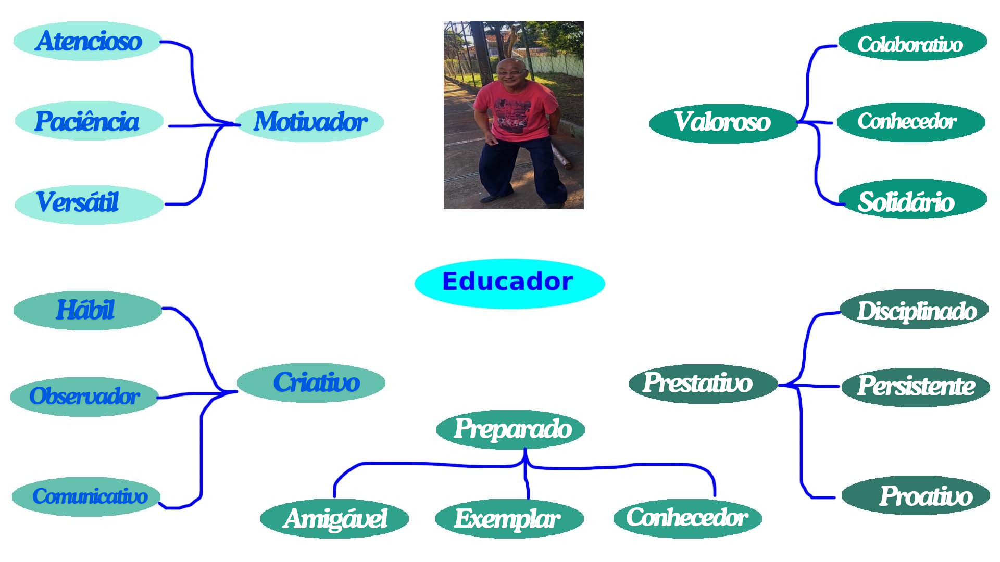
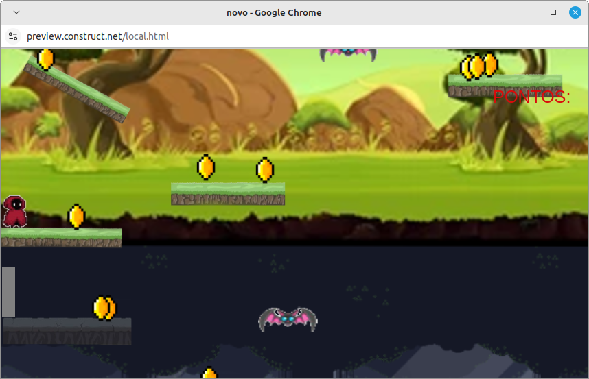

Professor Claubio, mais conhecido como Sadao, Careca, Zé Gotinha, entre outros apelidos, possui formação academica em Educação Física, trabalha atualmente lecionando a matéria de Educação Física. O mesmo ministra aulas para a turma do Curso Técnico Profissionalizante, e uma turma do Técnico em Desenvolvimento de Sistemas.


Clique na imagem acima para jogar um jogo produzido especialmente para o professor Sadao
 Clique na imagem acima para dar sua opinião sobre nosso projeto!
Clique na imagem acima para dar sua opinião sobre nosso projeto!